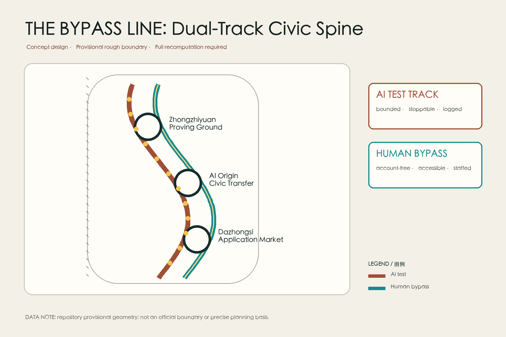
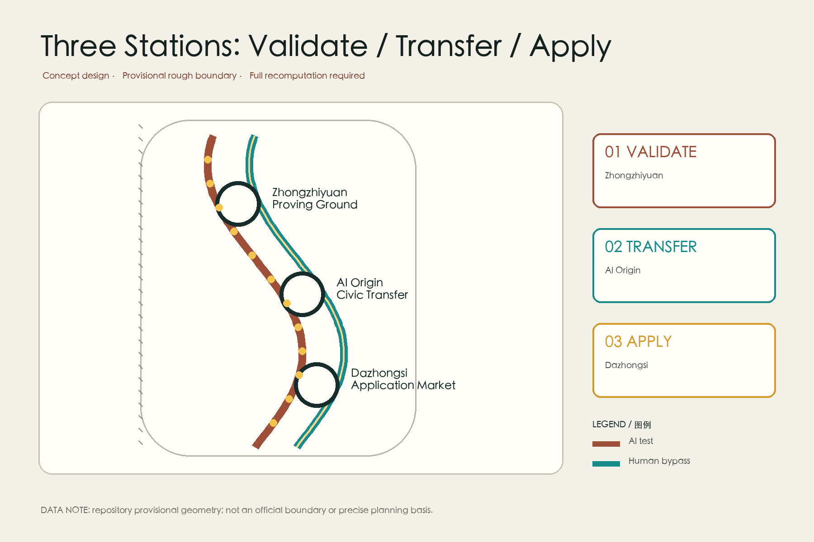
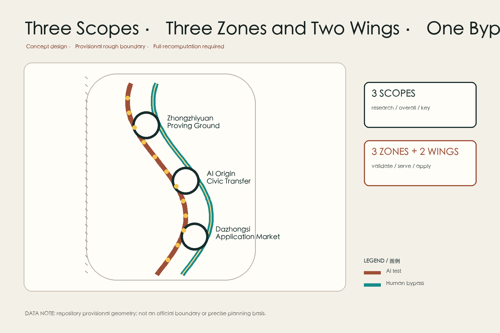
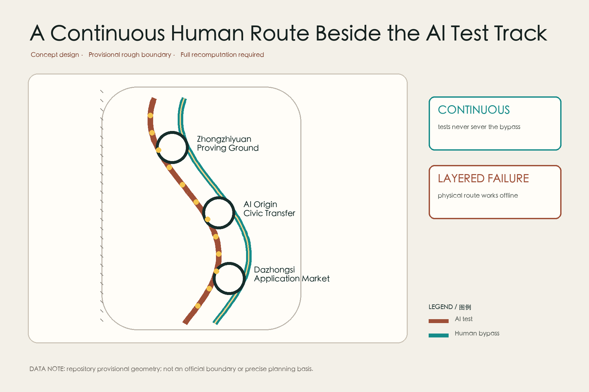
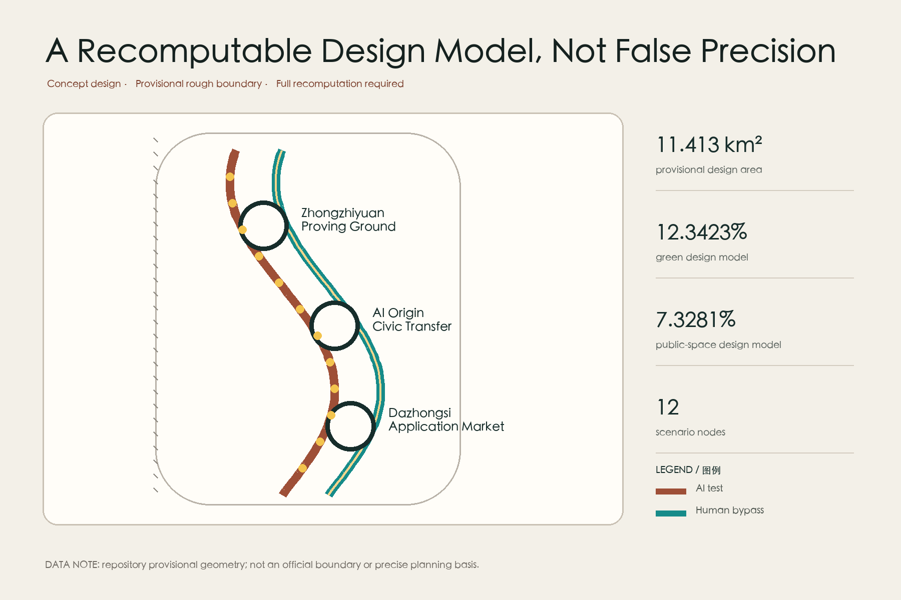

Coordinated research: industry and future-city mechanisms
Overview Map · Key Areas · Land-Use Zones · Walking and Cycling · Blue-Green Public Space · Renewal Projects · AI Scenarios · Core Metrics · Task Coverage · Self-Check Status · Sources · Assumptions
Three scopes
Overall design: dual-track civic spine and wing interfaces
Key-area design: validate, transfer, apply

Three key areas
Zhongzhiyuan proving ground: bounded tests, human takeover, public failure archive.
AI Origin civic transfer hall: every screen entrance has a staffed alternative.
Dazhongsi application market: AI recommendation and ordinary transaction coexist.

Land use and renewal

Land use, buildings, and retain-renovate-demolish choices are conceptual; no statutory FAR, height, or demolition conclusion is claimed.
Mobility and blue-green

Twelve scenarios
产业测试 / Industry test
AI route + human bypass + takeover role + stop condition产业测试 / Industry test
AI route + human bypass + takeover role + stop condition产业测试 / Industry test
AI route + human bypass + takeover role + stop condition产业测试 / Industry test
AI route + human bypass + takeover role + stop condition公共服务 / Civic service
AI route + human bypass + takeover role + stop condition公共服务 / Civic service
AI route + human bypass + takeover role + stop condition公共服务 / Civic service
AI route + human bypass + takeover role + stop condition公共服务 / Civic service
AI route + human bypass + takeover role + stop condition文化运营 / Culture and operations
AI route + human bypass + takeover role + stop condition文化运营 / Culture and operations
AI route + human bypass + takeover role + stop condition文化运营 / Culture and operations
AI route + human bypass + takeover role + stop condition文化运营 / Culture and operations
AI route + human bypass + takeover role + stop conditionMetrics and evidence
Provisional design area
Green design model
Public-space design model

Self-check and limits
Design-depth items carry structured evidence
Announcement and Agent tasks covered
Official boundaries, controls, buildings, and ownership remain pending
Passing self-check means the package is reviewable, not approved, selected, or implementable. Sources: official announcement, Agent taskbook, repository Source Registry, and local standards snapshots.